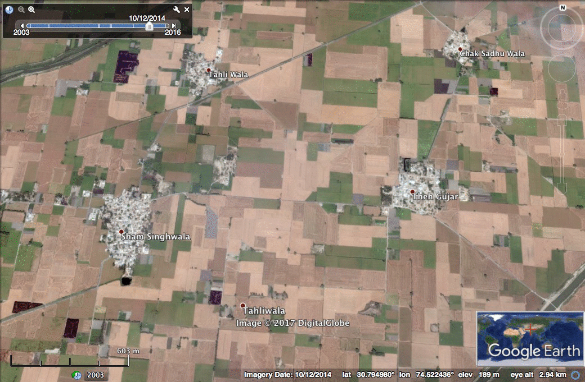
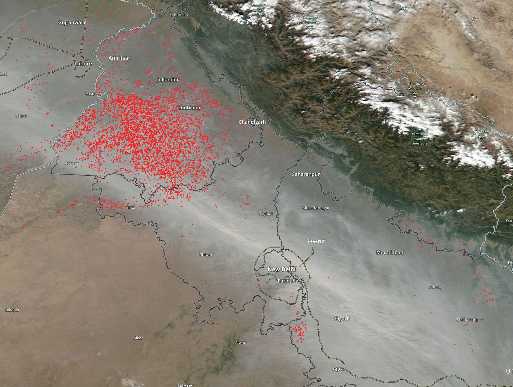
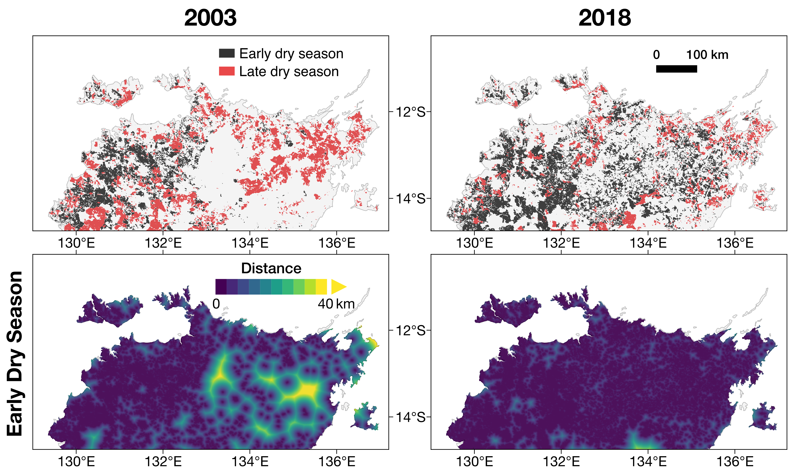
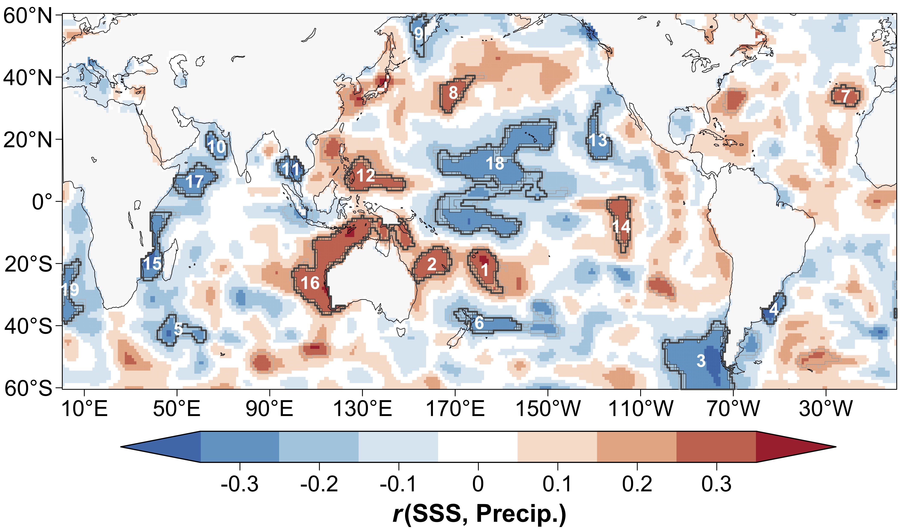

Current Projects
Wildfires and Smoke across North America
Severe fire seasons in recent years have underscored the increasing vulnerability of the western United States and Canada to wildfires, which deteriorate public health, disrupt livelihoods, and damage infrastructure. Against the backdrop of a warming climate and recent droughts, the buildup of fuels from the legacy of federal active fire suppression in the 1900s led to larger and more severe wildfires in recent decades. In current work, we are tackling research on western U.S. wildfires on several fronts.
I. Modeling the smoke burden from wildfires
Smoke from wildfires in North America are observed from surface monitors and satellites. For example, NOAA's Hazard Mapping System (HMS) smoke product contains polygons drawn by NOAA analysts who delineate smoke from non-smoke areas using primarily GOES satellite imagery. We found that wildfires in CA, OR, and WA in 2020 exacerbated short-term exposure to smoke particulate matter and the severity of COVID-19 pandemic (Zhou et al., 2021). While the HMS smoke product is increasingly used in public health and air pollution studies, the dataset is subject to caveats. For example, HMS may indicate aloft smoke that does not affect surface air quality, particularly within polygons categorized as light density. To investigate how accurately HMS reflects surface conditions, we compared HMS with airport observations, monitor measurements, and model estimates (Liu et al., 2024b). We also seek to quantify smoke impacts on public health, smoke risk, and smoke exposure mitigation from prescribed burning (Kelp et al., 2023; 2025; Chung et al., 2025), assess remote sensing datasets for estimating wildfire smoke burden (Schollaert et al., 2025; VoPham et al., 2025), and project climate change impacts on wildfires (Feng et al., 2025).
II. Tracking wildfire progression using satellite observations
We developed the GOES-Observed Fire Event Representation (GOFER) algorithm using the GOES-East and GOES-West geostationary satellites to map the spatio-temporal progression of large wildfires on an hourly basis (Liu et al., 2024a). In current work, we are investigating the meteorological and active fire suppression controls on fire spread in California and improving the GOFER algorithm by generalizing its applicability across western North America. In collaborations with UCI, NASA (EIS-Fire), and Natural Resources Canada (WildFireSat), we are contributing to the development of automated fire tracking algorithms with active fire observations from low-earth-orbit satellites (Orland et al., 2025; Coffield et al., 2026; Scholten et al., 2026).
Publications: Zhou et al. (2021, Sci. Adv.), Kelp et al. (2023, Earth's Future), Liu et al. (2024a, ESSD), Liu et al. (2024b, IJWF), Kelp et al. (2025, AGU Adv.), Chung et al. (2025, ES&T), Feng et al. (2025, PNAS), VoPham et al. (2025, Cancer Epidemiol.), Schollaert et al. (2025, ES&T Lett.), Orland et al. (2025, Fire Ecol.), Coffield et al. (2026, Remote Sens. Environ.), Scholten et al. (2026, Sci. Adv.)
Datasets: GOFER Product
Earth Engine Apps: HMS Smoke Explorer, GOFER Visualization, SMRT-Flames Tool
Links: UCI-UBC-NASA Fire Tracking, WildFireSat, BlueSky Canada
Animation of active fire detections and smoke from the Creek Fire on September 5, 2020 as observed by the GOES-17 geostationary satellite. The Creek Fire ultimately burned 379,895 acres of land and destroyed over 850 structures.
Agricultural Fires and Air Quality Degradation in Northwestern India
In northwestern India, the double crop system alternates between the monsoon crop (kharif, predominantly rice) and winter crop (rabi, predominantly wheat). The short turnaround between harvest and sowing pressures farmers to quickly remove crop residue from the field to prepare for the next planting. In addition, the use of combine harvesters, which saves time and decreases labor costs, leaves behind abundant root-bound residues that are difficult to remove manually. The prevailing, cost-effective method is to burn the crop residues. However, crop residue burning releases a suite of pernicious gases and aerosols into the atmosphere that degrades both rural and urban air quality. Although crop residue burning is just one of many pollution sources, it is highly episodic and seasonal. Every year, the burning of rice residue from October to November contributes to thick haze and poor air quality over the region (Lan et al., 2022). New Delhi, a mega-city already suffering from heavy local pollution, is located downwind of these seasonal agricultural fires. During the post-monsoon, meteorology (e.g. slow winds and temperature inversions) help trap pollutants near the surface in north India, increasing air pollution levels (Gautam et al., 2023).
We first used HYSPLIT atmospheric back trajectories to define Delhi's post-monsoon (October-November) and pre-monsoon (April-May) airsheds, or approximate regions where emissions can affect Delhi's local air pollution (Liu et al., 2018a). Focusing on the post-monsoon burning season, we then used the STILT model to estimate the PM2.5 enhancement in the Delhi National Capital Territory (Cusworth et al., 2018). We also developed a fusion method using MODIS (500 m x 500 m) and Landsat (30 m x 30 m) imagery to approximate burned area; however, we find that moderate-resolution sensors, such as MODIS, are unable to see many small fires, therefore underestimating overall fire activity (Liu et al., 2019). In a more recent approach, we used satellite and household survey data to build a new agricultural fire emissions inventory, SAGE-IGP, for north India (Liu et al., 2020b).
North India faces dual challenges of severe groundwater depletion and air pollution. To alleviate groundwater depletion in Punjab and Haryana, the Preservation of Sub-Soil Water Act of 2009 delayed rice sowing dates to align the timing closer to the monsoon onset. However, this delay in the monsoon rice growing season has led to a delay in the post-monsoon fire season of around two weeks from 2003-2016 (Liu et al., 2021a). Through atmospheric modeling of smoke PM2.5 driven by SAGE-IGP fire emissions, we find that the delay in the post-monsoon fire season has consistently exacerbated poor air quality in nearby downwind areas, such as in New Delhi (Liu et al., 2022). The unintended air pollution resulting from the cascading delays in the crop cycle and fire season suggests that future policies should consider groundwater depletion and smoke pollution as linked challenges.
Publications: Liu et al. (2018a, Atmos. Environ.), Cusworth et al. (2018, Environ. Res. Lett.), Liu et al. (2019, Environ. Res. Commun.), Liu et al. (2020b, Atmos. Environ. X), Liu et al. (2021a, Environ. Res. Lett.), Liu et al. (2022, J. Geophys. Res. Atmos.), Lan et al. (2022, Nat. Commun.), Gautam et al. (2023, Geophys. Res. Lett.)
Datasets: SAGE-IGP Inventory
Recorded Talks: ACCESS XVII (July 29, 2023)

Pre-burn (Oct 12, 2014) and post-burn (Oct 20, 2014) in western Punjab, India (DigitalGlobe, Google Earth)

Satellite observations of active fires and smoke from Suomi NPP/VIIRS over northwest India on November 6, 2016 (NASA Worldview)
Modeling the Public Health Impacts of Fires in Equatorial Asia
In strong El Niño years (typically very dry conditions), such as 2006 and 2015, fires associated with oil palm, timber, and logging plantations and deforestation in Indonesia lead to severe, persistent haze over Equatorial Asia from July to November. In part due to drought conditions associated with El Niño and the large area of fuel-rich peatlands, which contain partially decayed organic material, fires were able to persist and associated emissions exceeded yearly U.S. fossil fuel emissions on many days during the 2015 fire season (WRI, GFED). Peat sequesters carbon in meters-deep layers accumulated over thousands of years; peat fires, then, reduce the ability of Indonesia to be a carbon sink. In past work, we developed a framework to rapidly estimate the public health impacts of the 2015 severe haze episode in Equatorial Asia. Overall, smoke exposure, weighted by population, more than doubled from the 2006 to 2015 severe haze events. Based on chemical transport modeling, fire emissions in the provinces of Jambi and South Sumatra and West and Central Kalimantan contributed to the bulk of population-weighted smoke exposure in Indonesia, Singapore, and Malaysia (Koplitz et al., 2016). We then used Google Earth Engine to build the SMOKE Policy Tool, which estimates the public health benefits of reducing fires in various land use scenarios, including peatland restoration (Marlier et al., 2019). In more recent work, we find that using different global fire emissions inventories can significantly impact modeled estimates of smoke particulate matter, particularly in Equatorial Asia (Liu et al., 2020a). To help end-users quickly compare five widely-used inventories and diagnose their underlying assumptions, we developed the FIRECAM Tool (Liu et al., 2020a).
Publications: Koplitz et al. (2016, Environ. Res. Lett.), Marlier et al. (2019, GeoHealth), Liu et al. (2020a, Remote Sens. Environ.), Madrigano et al. (2024, GeoHealth)
Earth Engine Apps: SMOKE Policy Tool, FIRECAM

Population-weighted smoke exposure in Singapore, Indonesia, and Malaysia by contributing province (Koplitz et al., 2016).
Satellite Observations of Global Fire Activity: Trends, Implications, and Technical Challenges
Satellites are an invaluable tool for observing, monitoring, and mapping global fire activity (FIRMS). Sensors such as MODIS, aboard the NASA's Terra and Aqua satellites, and VIIRS, aboard the S-NPP, NOAA-20, and NOAA-21 satellites, detect active fires on a daily and global scale by tracking thermal anomalies. Burned area can be mapped at high spatial resolution (10-30 m) using Landsat and Sentinel-2 imagery by comparing pre- and post-fire infrared signatures. Several technical challenges complicate interpretation of satellite-derived fire datasets, leading to biases in fire emissions estimates (Liu et al., 2020a; 2020b; Whaley et al., 2024; Parrington et al., 2025). For example, clouds and thick haze can obscure fires from satellite detection, leading to missed active fires (Liu et al., 2020b). Dark soil and cloud shadows make it challenging to separate burned from unburned areas (Liu et al., 2019). Moreover, we find artificial discontinuities in MODIS burned area datasets due to the tile-dependent algorithms that process images in chunks for computational efficiency (Liu and Crowley, 2021; BA Tiling Explorer).
Humans increasingly control fire ignition and spread through deforestation, agriculture, and forest management. However, more people than ever are living in the wildland-urban interface and thus vulnerable to destructive fires. Not only does fire shape ecosystems and landscapes, but it also impacts air quality, public health, and climate through emission of greenhouse gases and aerosols. Although it is important to quantify trends in the magnitude of burned area, temporal shifts in the fire season add another dimension to the story. Following Liu et al. (2021a), we search globally for regions where the timing of the primary fire season has shifted, focusing on north Australia and southwest Russia (Liu et al., 2021b). In these two regions, we find that humans altered the temporal distribution of fire activity through increased prescribed burning and potentially modernization in agricultural practices.
Publications: Liu et al. (2019, Environ. Res. Commun.), Liu et al. (2020a, Remote Sens. Environ.), Liu et al. (2020b, Atmos. Environ. X), Liu and Crowley (2021, IOP SciNotes), Liu et al. (2021b, Environ. Res. Lett.), Whaley et al. (2024, GMD), Parrington et al. (2025, Elementa)
Earth Engine Apps: Burned Area (BA) Tiling Explorer, FIRECAM

In north Australia, increased prescribed burning during the early dry season has reduced burned area during the fire-prone late dry season by creating a patchwork of burned and unburned areas (Liu et al., 2021b). Reducing distances between fuel-limited burned areas limits fire spread in the late dry season.
Past Projects
Global Search for Sea Surface Salinity Predictors of Regional Rainfall Patterns
The global ocean makes up the bulk of the global water cycle, and is the ultimate source of all rainfall, implying that changes in the ocean affect rainfall patterns on land. Traditionally, seasonal to decadal sea surface temperature (SST)-based patterns have been linked to variations in rainfall over land. However, the salinity of the surface ocean is directly responsive to changes in evaporation and precipitation. We find that abnormally salty (more evaporation) or fresh (more precipitation) patches of the ocean can be used to predict rainfall on land one season ahead. Specifically, we looked globally for changes in autumn sea surface salinity (SSS) that correspond well with variations in winter precipitation in the southwestern United States to build a SSS-based model. We find that the SSS-based model outperforms the SST-based model. Thus, incorporating SSS into existing frameworks for predicting seasonal rainfall on land can improve forecasts needed for allocating water resources ahead of abnormally dry or wet seasons.
Publications: Liu et al. (2018b, Geophys. Res. Lett.)

Correlation of autumn sea surface salinity with winter precipitation in southwestern United States and identified SSS predictors (Liu et al., 2018)
Glacial-Interglacial Variability in the Strength of the North Pacific Biological Pump
Liu T., J.F. McManus, K. Costa, and T. Liu. A glacial-interglacial record of the North Pacific biological pump for the past 600,000 years. Ocean Sciences Meeting, New Orleans, LA, February 23, 2016. (abstract)
A Multi-Proxy Record of Paleovegetation and Paleoclimate from Middleton Island, Alaska
Liu T., J.E. Nichols, D.M. Peteet, C.M. Moy, J. Crusius, and A.W. Schroth. Leaf wax n-alkane distributions, stable isotope ratios, paleovegetation, and dust flux to reconstruct North Pacific climate during the last 2,000 years. American Geophysical Union Fall Meeting, San Francisco, CA, December 18, 2014. (abstract)